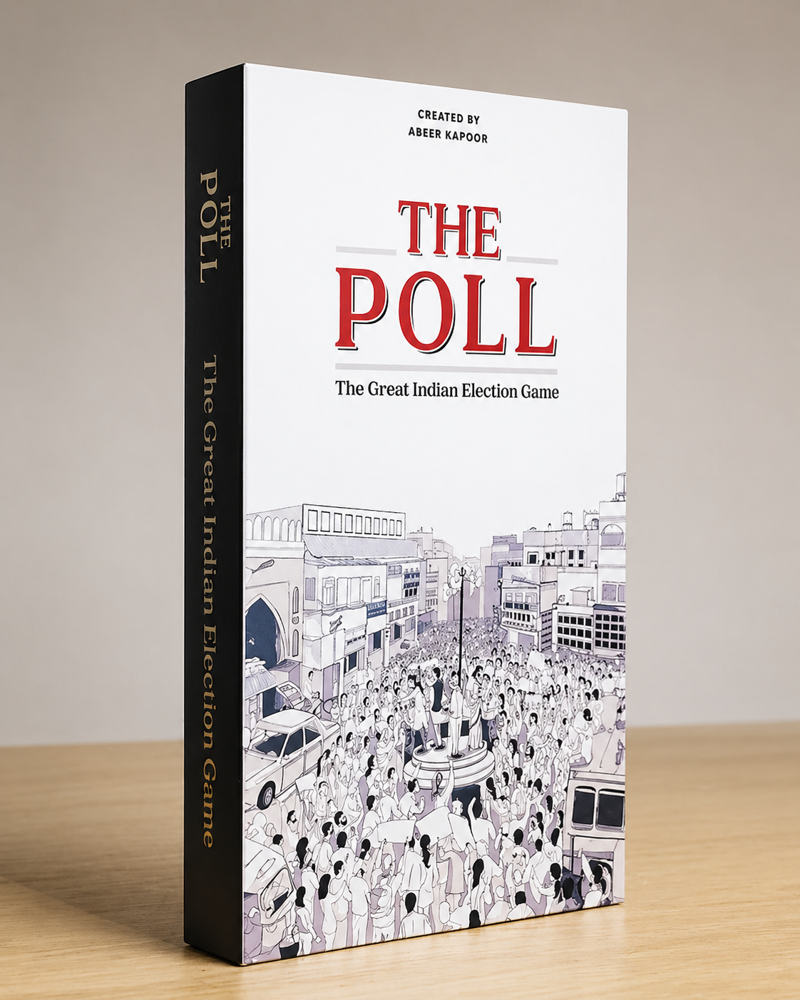

Governance · Civic Education
Kartik
Character-driven civic exploration through democratic decision contexts — building civic vocabulary and understanding institutional roles.

Character-driven civic exploration through democratic decision contexts — building civic vocabulary and understanding institutional roles.
About the game
Kartik is a narrative game built around a single character — a young citizen navigating a series of civic decision points: a ward committee meeting, a gram sabha, an RTI filing, a local election. Players make decisions for Kartik, experiencing the consequences of civic participation and disengagement from the inside.
The game is designed for contexts where civic education needs to be personal before it can be institutional. By following a relatable protagonist through real civic scenarios, players develop the vocabulary and confidence to participate in the systems they inhabit.
01 — Design
Built through research into the barriers to civic participation — not the legal and procedural barriers, but the social, psychological, and informational ones. Design workshops were run with young citizens, first-time voters, civic educators, and local government practitioners.
The core question: what would it take for a young person to feel that civic participation is worth it? What knowledge, what vocabulary, what confidence is required — and how can a game provide the rehearsal environment for building these?
02 — Development
A narrative card game that follows a citizen through civic decision points.
Players make decisions on behalf of Kartik — a young citizen in a mid-sized Indian city — across a series of civic encounters: panchayat, election, RTI, public hearing.
Each decision opens different pathways, with consequences that accumulate across scenarios. Players experience the difference participation makes — and what disengagement costs.
Discussion prompts built into the game structure draw players from Kartik's experience into their own — connecting the narrative to lived civic reality.
Card-and-narrative format for 6–20 participants. 1.5–2.5 hours. Designed for schools, colleges, youth organisations, and community civic education programmes.
03 — Deployment
Kartik is used in civic education, youth engagement, and community literacy programmes across India.
Used in civic education programmes as an experiential introduction to democratic participation and institutional roles.
Run in youth civic engagement programmes as a starting point for conversations about political participation and accountability.
Deployed in community mobilisation programmes as a narrative anchor for discussions about local governance and citizen rights.
Outcomes
Participants develop civic vocabulary and participation confidence through narrative experience.
Gram sabha, RTI, ward committee, electoral roll — terms become familiar through story rather than lecture.
Following Kartik builds the sense that civic participation is accessible and consequential — not reserved for experts.
Players develop a working map of the institutions that affect their daily lives and the pathways for engaging with them.
The narrative structure bridges Kartik's experience and the player's own — making civic knowledge feel personal, not abstract.


Use Kartik in your civic education programme, school curriculum, or youth engagement initiative. We provide facilitation guides and educator support.
Get in touch →
Public opinion, persuasion, and electoral behaviour as a multi-player simulation.

Panchayat governance — rural planning, budgets, and the real trade-offs of local government.

Institutional systems repair — diagnose constraints and test interventions under governance trade-offs.